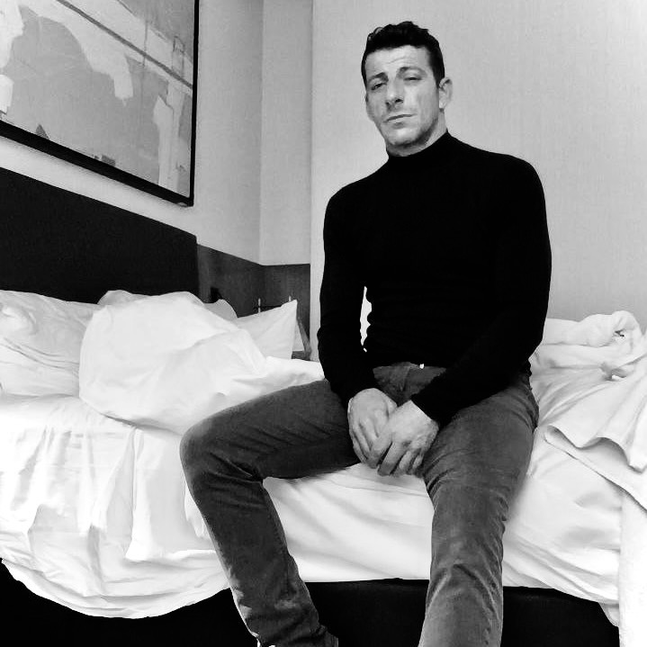

Dimitrios Giannakoudakis is a Malta-based Film & Television Actor fluent in Greek, Maltese, and English. Recently cast in a leading role in the feature film Żafżifa (2025), which premiered at the Cairo International Film Festival.
With over 20 years of experience in the film and television industry, he has worked across featured roles, supporting performances, and background work in international productions.